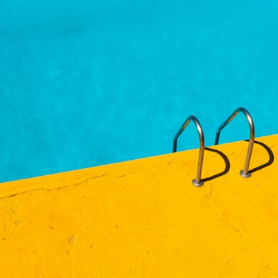

Fishing in San Diego

Hi, I am Calvin Belmonte-Ryu, and this website is dedicated to one of my favorite things in the world — fishing in San Diego. Growing up near the Southern California coast, I developed a deep appreciation for the ocean and everything that comes with it. San Diego is one of the best places in the country to fish, offering everything from laid-back pier fishing to serious offshore trips targeting yellowfin tuna and yellowtail. The combination of warm weather, clean water, and incredible marine biodiversity makes it a year-round destination for anglers of all skill levels.
What I love most about fishing in San Diego is the variety. On any given weekend you can choose between surf fishing at Mission Beach, kayak fishing in La Jolla, dropping a line off the Ocean Beach Pier, or booking a half-day trip out of Point Loma. Each spot has its own character, its own target species, and its own community of regulars who are always happy to share tips. The sportfishing fleet that runs out of the harbor is world-class, and the long-range boats that head down to Baja offer some of the most exciting fishing you can find anywhere on the Pacific coast.
This website was built as part of my DS 4200 Data Visualization course at Northeastern University. I wanted to use it as an opportunity to share something I genuinely care about rather than just building a generic portfolio page. Feel free to explore the fishing guide on the next page for more details on spots, species, and gear. Thanks for visiting, and tight lines.
About This Site
This website was created using HTML and CSS, and is hosted on GitHub Pages. It covers my favorite fishing spots and tips for fishing in San Diego. Use the navigation bar above to explore the fishing guide page.